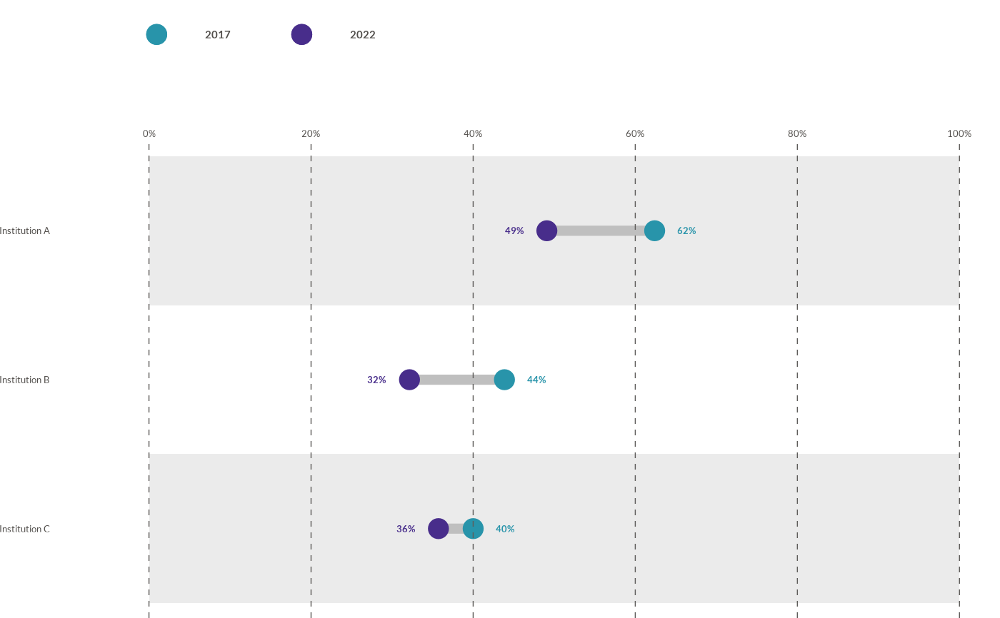
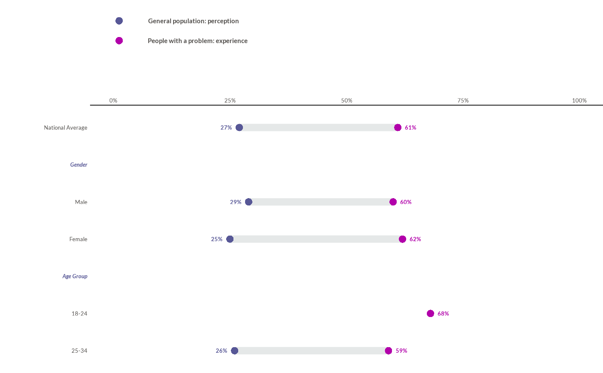

![[Experimental]](figures/lifecycle-experimental.svg)
wjp_dumbbells() takes a data frame with long-format data and returns a
ggplot object with a dumbbell chart following WJP style guidelines.
Dumbbell charts show the change between two points (e.g., two years) for
each category, connected by a line. Values are expected on a 0-100
percentage scale.
Usage
wjp_dumbbells(
data,
target,
grouping,
cgroups,
colors = NULL,
labels = NULL,
labpos = NULL,
cvec = NULL,
order = NULL,
bgcolor = "#ffffff",
color = deprecated(),
ptheme = WJP_theme(),
label_offset = 4,
show_legend = TRUE,
legend_labels = NULL,
legend_position = "top",
legend_direction = "horizontal",
legend_text_size = 11,
legend_key_size = NULL,
legend_fontface = "bold",
legend_justification = "left",
headers = NULL,
header_fontface = "bold",
header_colour = NULL,
header_size = NULL,
highlight_levels = NULL,
highlight_fontface = "bold",
highlight_colour = NULL,
label_align = c("left", "right"),
label_size = NULL,
label_colour = NULL,
breaks = seq(0, 100, 20),
expand_mult = NULL,
axis_line = FALSE,
axis_line_color = "#1A1A1A",
value_axis = TRUE,
strips = TRUE,
strip_color = "#EBEBEB",
grid = TRUE,
grid_ontop = TRUE,
value_position = c("offset", "outside"),
value_gap = 3,
value_size = 10,
value_fontface = "bold",
point_size = 4.5,
point_stroke = 0.5,
segment_color = "#BFBFBF",
segment_width = 2.5,
clip = "on",
layout = NULL
)Arguments
- data
Data frame containing the data to plot.
- target
String. Column name of the variable that supplies the values to plot.
- grouping
String. Column name of the variable that supplies the categories (Y-axis labels).
- cgroups
Character vector of length 2 with the two groups to compare (the start and end points of each dumbbell).
- colors
String. Column name of the variable that indicates the start and end groups (the one containing the
cgroupsvalues).- labels
String. Column name of the variable containing the value labels to display. Default is
NULL(no labels).- labpos
String. Column name of the variable that contains the positions for the value labels. Default is
NULL(positions are computed automatically just outside each endpoint).- cvec
Vector of two colors for the start and end points. If named, names should match the
cgroupsvalues. Default isNULL(c("#2894aa", "#482d8b")is applied).- order
Named vector mapping category values to their display order (top to bottom). Default is
NULL(data order).- bgcolor
String. Hex code of the background color for the alternating row strips. Default is
"#ffffff".- color
![[Deprecated]](figures/lifecycle-deprecated.svg) Use
Use colorsinstead.- ptheme
ggplot theme to apply. Default is
WJP_theme().- label_offset
Numeric. Distance in percentage points between an endpoint and its automatically positioned label (
value_position = "offset"). Ignored whenlabposis supplied. Default is4.- show_legend
Logical. If
TRUE, displays a horizontal point legend above the chart using thecgroupsvalues as labels. Default isTRUE.- legend_labels
Character vector of length 2 with the legend text of the start and end points. Default is
NULL(thecgroupsvalues).- legend_position
Legend position:
"top"(default),"bottom","left","right", orc(x, y)inside the panel.- legend_direction
String.
"horizontal"(default) or"vertical".- legend_text_size
Numeric. Size of the legend text, in points. Default is
11.- legend_key_size
Numeric. Size of the legend keys, in points. Default is
NULL.- legend_fontface
String. Font face of the legend text. Default is
"bold".- legend_justification
String. Horizontal justification of a legend above or below the chart:
"left"(default),"center", or"right".- headers
String. Column name with the group of each category; a header row is drawn above each group. Default is
NULL(no headers).- header_fontface
String. Font face of the headers. Default is
"bold". Weight faces such as"semibold.italic"are accepted (seewjp_fonts()).- header_colour
String. Color of the headers. Default is
NULL(the color of the end points).- header_size
Numeric. Size of the headers, in points. Default is
NULL(the size of the category labels).- highlight_levels
Character vector of categories whose labels are highlighted (e.g., a national average). Default is
NULL.- highlight_fontface
String. Font face of highlighted labels. Default is
"bold".- highlight_colour
String. Color of highlighted labels. Default is
NULL(the color of the headers).- label_align
String. Alignment of the category labels:
"left"(default) or"right".- label_size
Numeric. Size of the category labels, in points. Default is
NULL(the size ofptheme).- label_colour
String. Color of the category labels. Default is
NULL("#524F4C").- breaks
Numeric vector with the breaks of the value axis. Default is every 20 points from 0 to 100.
- expand_mult
Numeric vector of length 1 or 2. Multiplicative expansion of the value axis. Default is
NULL(ggplot2's default; none with alayout).- axis_line
Logical. Draw a line under the value-axis labels. Default is
FALSE.- axis_line_color
String. Color of the axis line. Default is
"#1A1A1A".- value_axis
Logical. Show the labels of the value axis. Default is
TRUE.- strips
Logical. Draw alternating row strips. Default is
TRUE.- strip_color
String. Color of the shaded strips. Default is
"#EBEBEB".- grid
Logical. Draw grid lines across the value axis. Default is
TRUE.- grid_ontop
Logical. Draw the grid above the points. Default is
TRUE.- value_position
String.
"offset"(default) or"outside". See Details.- value_gap
Numeric. Distance, in points, between the edge of a point and its label when
value_position = "outside". Default is3.- value_size
Numeric. Size of the value labels, in points. Default is
10.- value_fontface
String. Font face of the value labels. Default is
"bold".- point_size
Numeric. Size of the points (ggplot2 units). Default is
4.5.- point_stroke
Numeric. Stroke of the points (ggplot2 units). Default is
0.5.- segment_color
String. Color of the connecting segment. Default is
"#BFBFBF".- segment_width
Numeric. Width of the segment (ggplot2
linewidth). Default is2.5.- clip
String.
"on"(default) or"off"(labels next to 0% or 100% stay visible).- layout
A
wjp_layout()with the geometry of the chart in points. Default isNULL.
Details
The function expects long-format data with one row per grouping (category)
and colors (endpoint) combination; cgroups names the two endpoint values
in order (start, end). A category may have a single value (the other row
missing or NA): its point and label are still drawn. When labels is
supplied without labpos, labels are placed automatically just outside each
endpoint and use the endpoint color. By default, a horizontal legend is
built from the two cgroups values (or legend_labels) and displayed above
the chart. Use order (a named vector such as c("A" = 1, "B" = 2)) to
control the top-to-bottom order of the rows.
Group headers. headers names a column with the group of each
category (e.g., "Gender", "Age Group"). A header row with the group name is
drawn above the first category of each group, styled with header_fontface,
header_colour, and header_size. Categories with an empty or missing
group (such as a national average at the top) get no header.
Value labels. value_position = "offset" (default) centers each
label label_offset percentage points from its endpoint, as in earlier
versions. "outside" anchors each label value_gap points from the edge of
its point, on the outer side of the pair.
Geometry in points. With a wjp_layout(), the label column
(label_width, label_gap), the 0-100% track (track_width), the value
column (value_gap, value_width), the row and header heights
(row_height, header_height, header_baseline), and the margins are
fixed in points, and the category labels are drawn as a text layer.
Examples
library(dplyr)
library(tidyr)
# Always load the WJP fonts
wjp_fonts()
# Percentage of people that trust their institutions, 2017 vs 2022
data4dumbbells <- WJPr::gpp %>%
filter(country == "Atlantis", year %in% c(2017, 2022)) %>%
select(year, q1a, q1b, q1c) %>%
mutate(
across(!year, \(x) as.double(unclass(x))),
across(!year, ~ case_when(.x <= 2 ~ 1, .x <= 4 ~ 0)),
year = as.character(year)
) %>%
group_by(year) %>%
summarise(across(everything(), \(x) mean(x, na.rm = TRUE) * 100)) %>%
pivot_longer(!year, names_to = "variable", values_to = "percentage") %>%
mutate(
institution = case_when(
variable == "q1a" ~ "Institution A",
variable == "q1b" ~ "Institution B",
variable == "q1c" ~ "Institution C"
),
value_label = paste0(round(percentage, 0), "%")
)
wjp_dumbbells(
data4dumbbells,
target = "percentage",
grouping = "institution",
colors = "year",
cgroups = c("2017", "2022"),
labels = "value_label",
cvec = c("2017" = "#2894aa", "2022" = "#482d8b"),
show_legend = TRUE,
label_offset = 4
)

# Report style: group headers, a single-value row, values outside the pair,
# no strips or grid, and an axis every 25% (fictional data)
perception <- data.frame(
category = rep(c("National Average", "Male", "Female", "18-24", "25-34"), 2),
group = rep(c("", "Gender", "Gender", "Age Group", "Age Group"), 2),
series = rep(c("Perception", "Experience"), each = 5),
value = c(27, 29, 25, NA, 26, 61, 60, 62, 68, 59)
)
perception$text <- ifelse(is.na(perception$value), "", paste0(perception$value, "%"))
wjp_dumbbells(
perception,
target = "value",
grouping = "category",
colors = "series",
cgroups = c("Perception", "Experience"),
labels = "text",
cvec = c("#575796", "#B200AA"),
legend_labels = c("General population: perception",
"People with a problem: experience"),
legend_direction = "vertical",
headers = "group",
header_fontface = "bold.italic",
header_colour = "#575796",
label_align = "right",
breaks = seq(0, 100, 25),
axis_line = TRUE,
strips = FALSE,
grid = FALSE,
value_position = "outside",
point_size = 3,
point_stroke = 0,
segment_color = "#E5E8E8",
segment_width = 3,
clip = "off"
)
